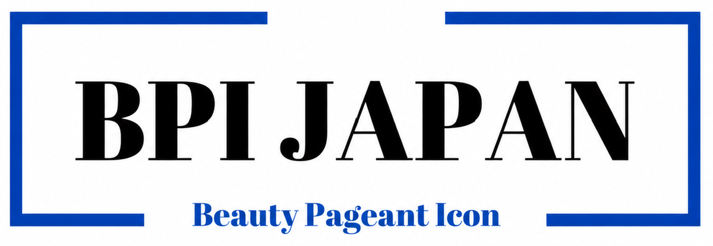
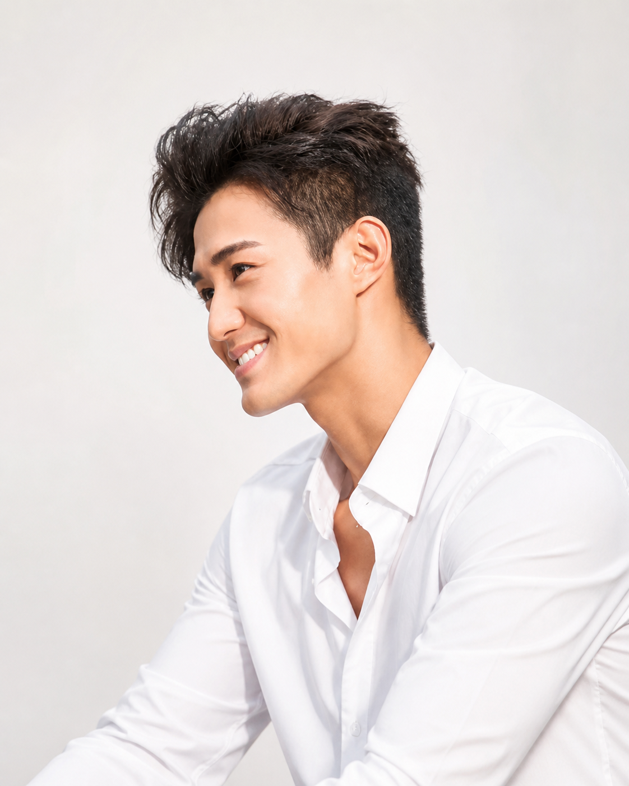
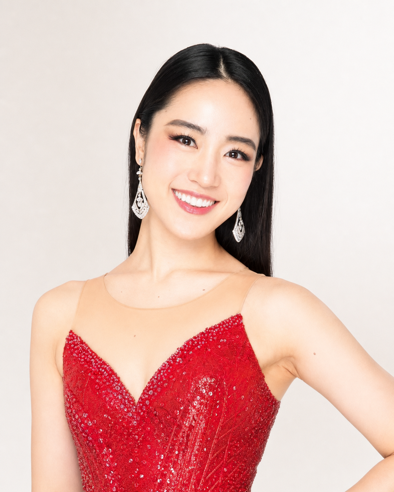

印象設計
第一印象、雰囲気、見せ方を整理し、審査員や観客に伝わる存在感を設計します。

Concept
目立つだけではなく、記憶に残る存在へ。
BPIが見つめるのは、外見の美しさだけではありません。言葉、姿勢、視線、歩き方、在り方。その人の内側にある魅力を磨き、コンテストの舞台で伝わる形へ整えていきます。
人混みの中に埋もれていた可能性が、誰かの目に留まる瞬間。その一歩を、BPI JAPANがプロデュースします。
For Contestants
第一印象、雰囲気、見せ方を整理し、審査員や観客に伝わる存在感を設計します。
ウォーキング、ポージング、視線、間の取り方まで、舞台で映える所作へ磨きます。
スピーチや質疑応答で、自分の想いがまっすぐ届くように言語化をサポートします。
Program
なぜ挑戦するのか、どんな存在として立つのか。自信の土台を整えます。
身体の使い方、姿勢、歩き方、ポージングをステージ仕様に引き上げます。
想いを短く、美しく、印象的に伝えるための言葉づくりを行います。
SNSやプロフィールまで含めて、あなたの魅力が伝わる見せ方を整えます。
Coaches
ミスコン・ミスターコンで必要とされるのは、外見だけではありません。姿勢、歩き方、言葉、印象、自己表現まで、舞台で伝わる魅力へ整えていきます。

BPI JAPAN 代表コーチ
TAKIMURA TSUYOSHI
大会で結果を出すために必要な見せ方を、印象設計から本番の表現まで一人ひとりに合わせて磨き上げます。

PAGEANT BEAUTY COACH
MARIKO NAKAGAWA
実績に裏付けられた視点で、ウォーキング、表情、所作、存在感まで、ステージで自然に輝くための表現を丁寧にサポートします。
Flow
目標、課題、強みを整理し、必要な準備を明確にします。
見た目・所作・言葉・表現を一つずつブラッシュアップします。
本番で自分らしく輝けるよう、実践を重ねて仕上げます。
Booking
まずは90分コース、またはコース相談から。無料カウンセリングはInstagram DMにて受け付けています。